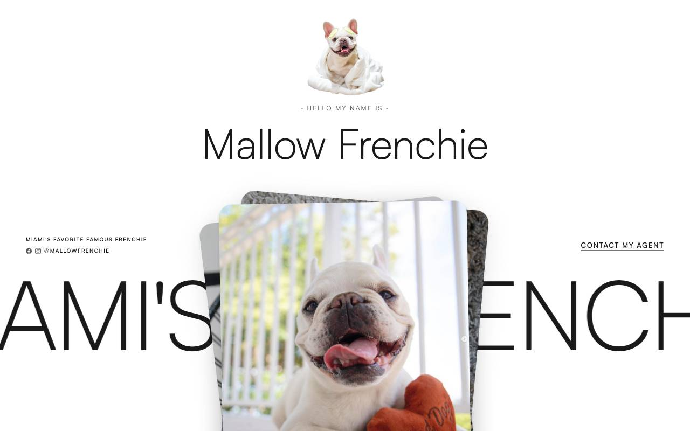
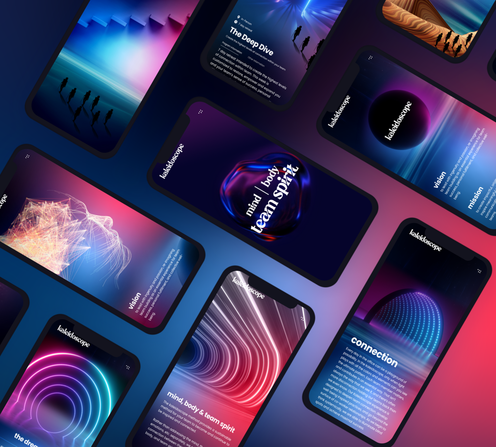
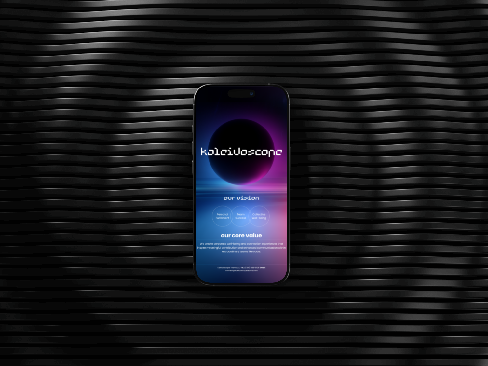

Website redesign and front-end build for a French Bulldog influencer brand.
Mallow Frenchie’s Webflow site was about ten years old and had stopped working well. MIUX rebuilt it as a scroll-driven brand site: real photos, updated info throughout, and a footer that exists purely to make people smile.
Mallow Frenchie’s Webflow site was about a decade old and wasn’t working well. The info was out of date, and the site didn’t feel like the dog everyone follows. MIUX started with a content audit of what was there, then a scroll prototype to test the feel.
A GSAP ScrollTrigger build. Real Mallow photos in carousels, service cards as pills, press previews that open on hover, and an animated grid of partner logos.
“Gina wanted something straightforward, not experimental.”
MIUX explored a frame-by-frame video scrub for the story, and tried smooth-scroll on top of GSAP. The smooth-scroll caused image flicker, and the video idea was more than the client wanted. The build went direct: GSAP only, the brand doing the talking.
The footer is 72 real Mallow stickers, scattered at random and popping in on load. It has no job beyond making people smile.


Kaleidoscope Teams ↗